Monitorització, connexió remota i llicenciament
Aquest sprint se centra en la monitorització del sistema, la connexió remota i la gestió de llicències a Linux. La monitorització permet supervisar el rendiment i l'estat dels recursos del sistema, la connexió remota facilita l'administració segura dels servidors a distància, i el llicenciament garanteix el compliment de les polítiques d'ús i distribució del programari.
1. MONITORITZACIÓ
Els logs són registres del sistema i aplicacions que documenten esdeveniments, errors i activitats per a la monitorització i seguretat. Es gestionen seguint normes com la rotació, classificació per gravetat i retenció. journalctl permet consultar logs en systemd, amb opcions per veure registres en temps real o filtrar per servei. La seva utilitat principal és monitoritzar un servidor, detectar problemes i millorar la seguretat i rendiment.
Primer de tot, anem a /var/log, on s'emmagatzemen els logs del sistema i aplicacions a Linux. Conté registres com syslog (esdeveniments), auth.log (autenticació), kern.log (nucli), dmesg (arrencada) i logs de servidors web. És clau per diagnosticar problemes i monitoritzar el sistema.
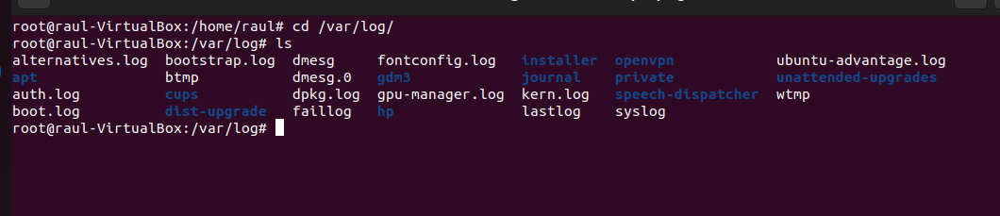
Si accedim a logrotate.conf, podem veure que és on es configura Logrotate, que gestiona la rotació, compressió i eliminació automàtica dels logs. Permet definir la freqüència, el nombre de logs a conservar, la compressió i accions abans/després de la rotació. Les configuracions específiques es troben a /etc/logrotate.d/.
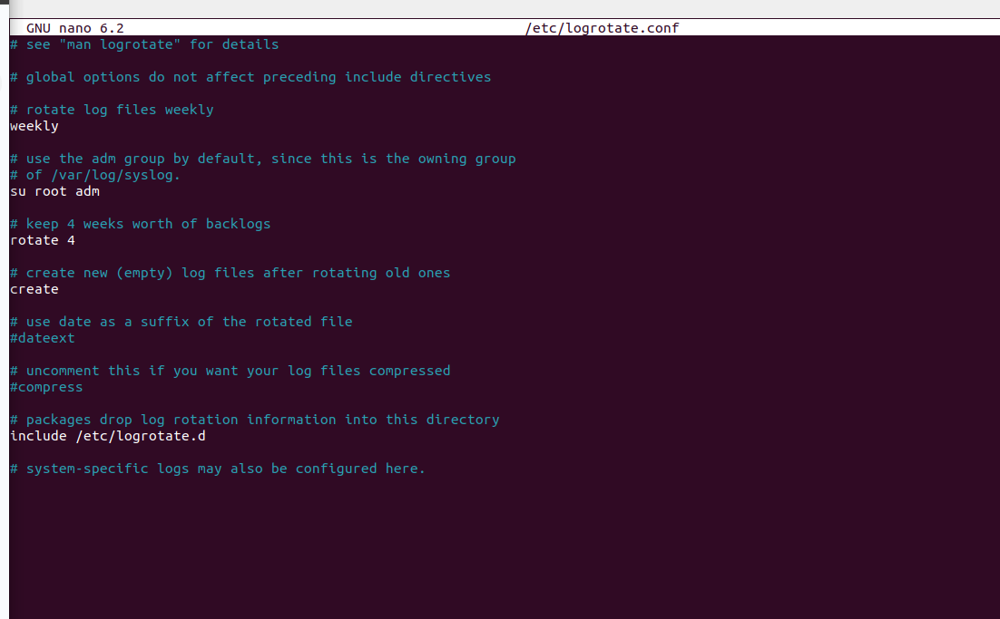
Si anem a /var/log/ufw.log, trobem que és sotmès a la rotació de logs per controlar l'espai en disc. Logrotate arxiva, comprimeix i gestiona els logs antics, mantenint-los organitzats sense saturar el sistema. La configuració es troba a /etc/logrotate.d/ufw.
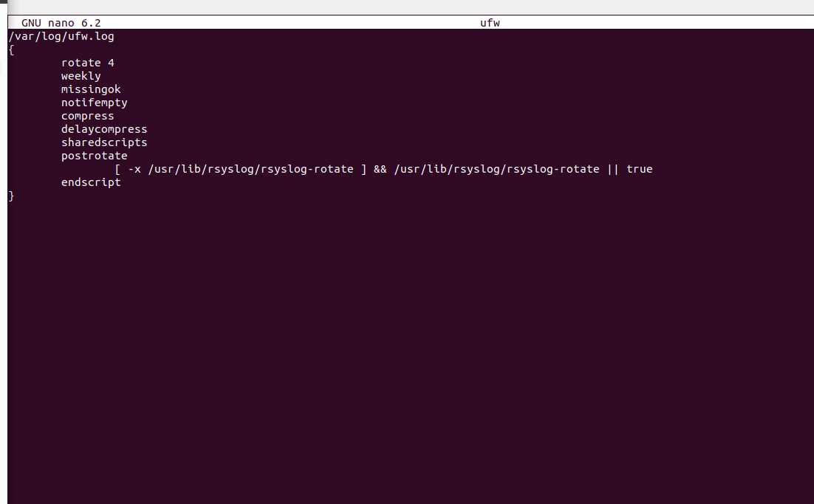
Si volem veure els registres dels esdeveniments, hem d'anar al syslog, ja que és un sistema on es recopila l'informació del sistema, nucli, serveis i aplicacions. Els logs es poden veure a /var/log/syslog i es poden filtrar per cercar errors o advertències.
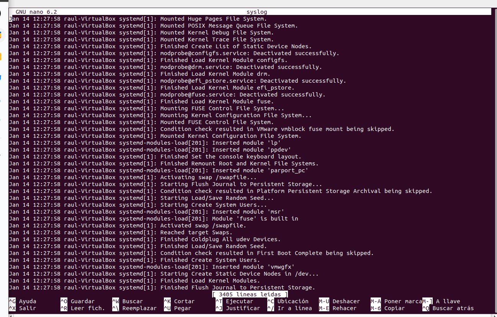
En el syslog.conf, trobem la configuració de syslog, on es defineixen les regles per gestionar els registres d'esdeveniments. Especifica la prioritat dels missatges i la destinació on s'emmagatzemen, com a fitxers locals o serveis remots. Per aplicar canvis, s'ha de reiniciar el servei rsyslog.
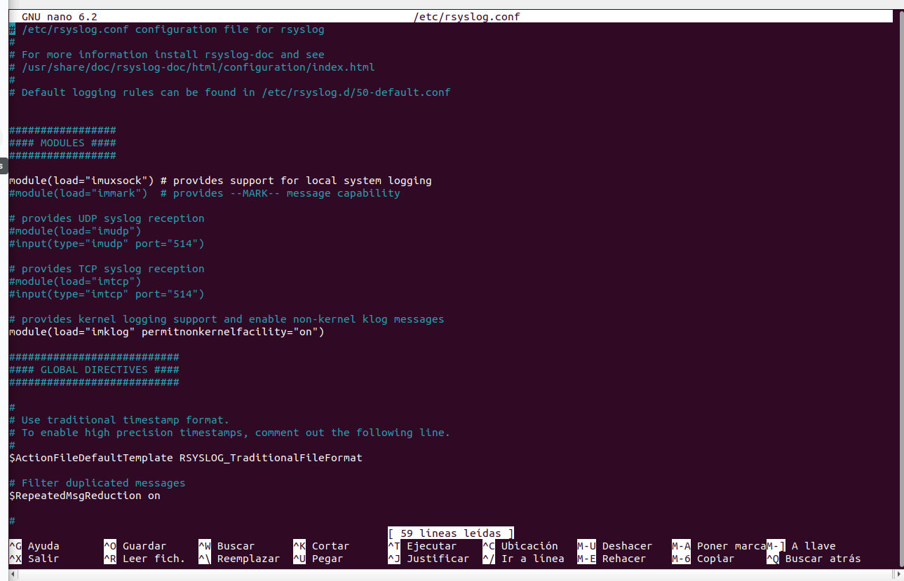
També trobem el fitxer 50-default.conf a /etc/logrotate.d/, que configura la rotació de logs per a serveis del sistema. Defineix com es gestionen els logs, incloent la freqüència de rotació, la conservació dels logs antics i la compressió.
Aquestes configuracions eviten que els registres d'aquests serveis específics es guardin en l'arxiu de logs especificat.
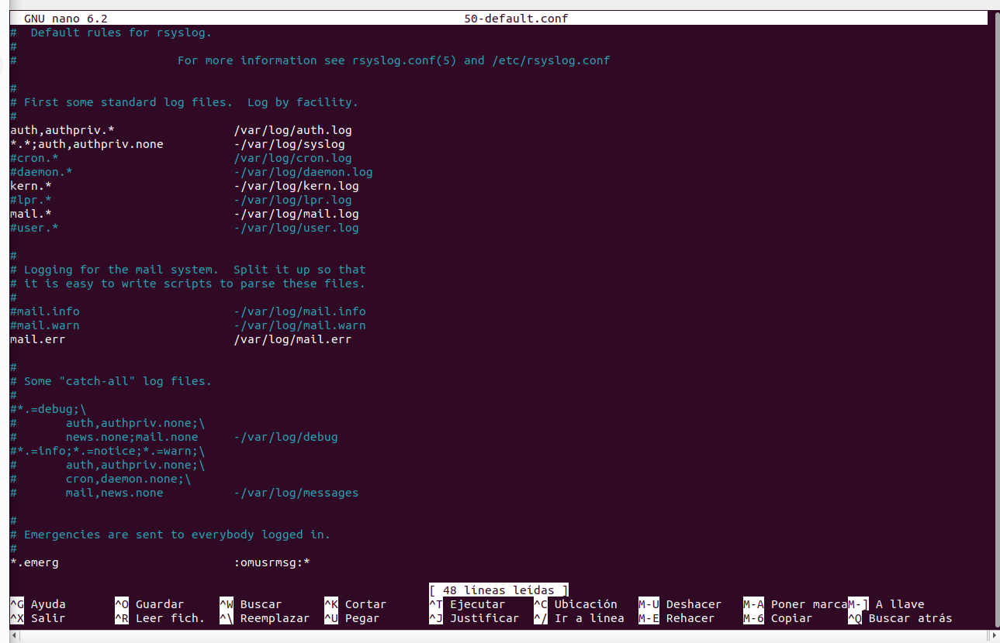
En aquest punt mantenim obert els logs actual pero veure els canvis a d'alt. Seguidament crearem el logs
Per crear un log utilitzarem la comanda logger -i -s -p que permet registrar missatges en els logs del sistema amb les següents opcions:
-i: Inclou l'ID de procés (PID) al missatge.-s: Mostra el missatge també per pantalla.-p: Defineix la prioritat del missatge (categoria i nivell de severitat).
Exemple: logger -i -s -p mail.err "Missatge" registrarà el missatge amb prioritat mail.err, incloent el PID i mostrant-lo a la pantalla. I es pot veure que surt al /var/log/syslog
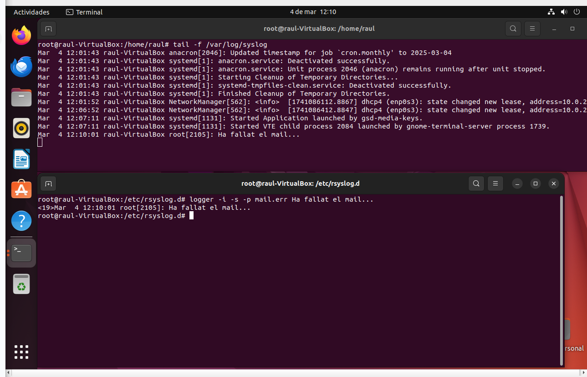
La frase corregida seria:
Si accedim als logs de mail.log, trobarem el log que acabem de crear amb el missatge, ja que estava definit que es redirigís a aquest fitxer de logs.
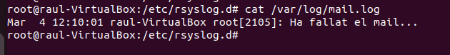
També, si es posa mail.=alert al fitxer 50-default.conf, només es registraran els missatges del servei de mail amb prioritat alert o més alta, indicant situacions que requereixen atenció immediata. Els missatges de menor severitat seran ignorats. Igualment, amb la prioritat crit, els missatges es redireccionaran al /var/log/mail.log.
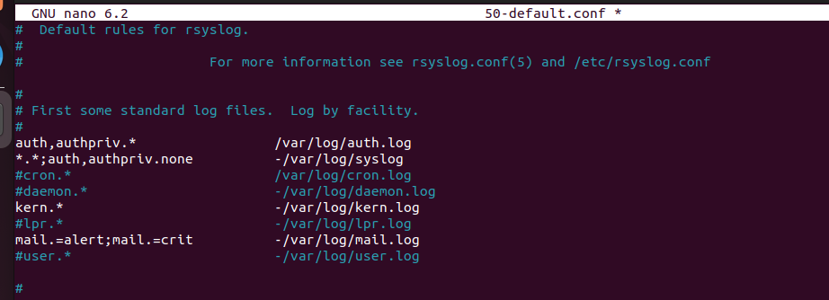
Per fer un exemple, farem el mateix però canviant per a què totes les prioritats amb *.crit més altes es redireccionin a /var/log/raul.log.
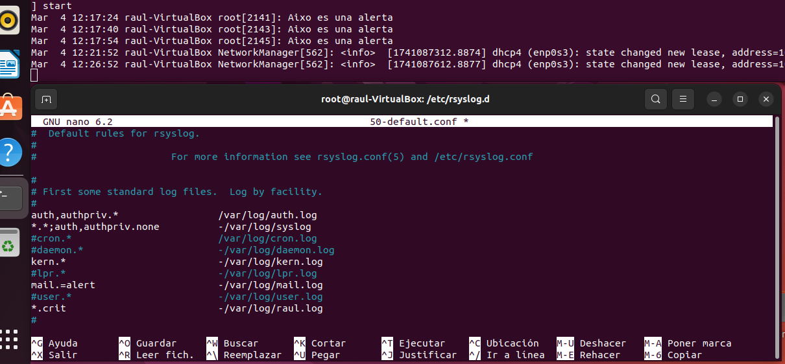
Creem un log amb la prioritat emerg i ara, si anem al /var/log/mail.log, veurem que no està aquest log (mirant el seu PID), però si anem a /var/log/raul.log, sí que el trobarem, ja que és de prioritat més alta.
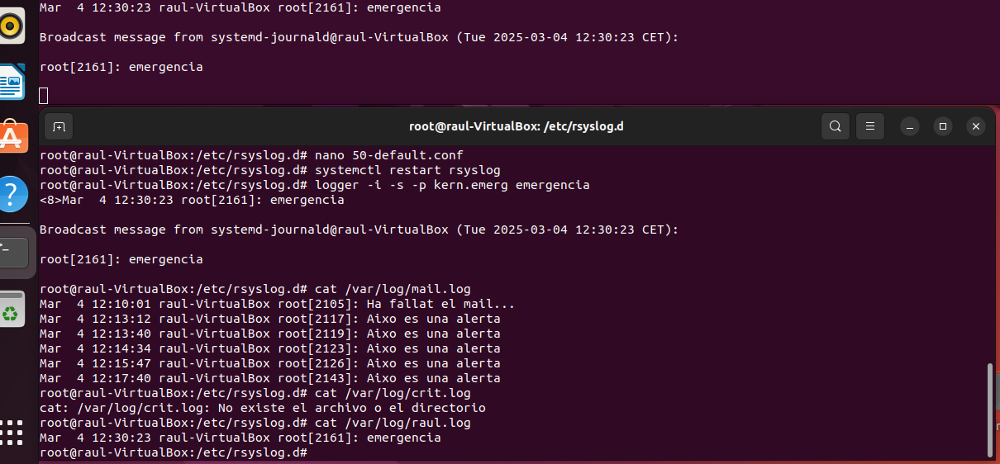
Per tindre-ho mes clar podem veure els nivells de prioritats en syslog es classifiquen en 8 nivells de severitat, de més baix a més alt:
debug: Informació detallada útil per a la depuració.info: Missatges informatius que indiquen el bon funcionament del sistema.notice: Missatges normals, però importants, per a l'operació del sistema.warning: Advertències de possibles problemes, però no crítiques.err: Errors que poden afectar el funcionament, però no són crítics.crit: Condicions crítiques que necessiten atenció immediata.alert: Problemes molt greus que requereixen una resposta immediata.emerg: Problemes crítics que impliquen una fallada total del sistema.
Els missatges amb una prioritat més alta inclouen també els de prioritats més baixes.
Amb el journalctl podem visualitzar i gestionar els registres del sistema guardats pel sistema de registre systemd. Ens permet consultar els logs del sistema de manera eficient, filtrar per data, servei o nivell de severitat, i veure missatges d'error, advertències, entre d'altres.
Per exemple, podem filtrar per les prioritats alert:
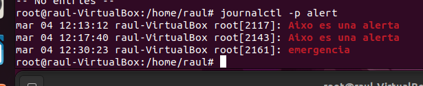
I seguidament, amb la comanda journalctl -u cron, podem veure els registres del servei cron gestionats per systemd. El paràmetre -u indica que es volen mostrar els logs d'un servei específic. En aquest cas, es mostraran els missatges relacionats amb el servei de cron, que gestiona les tasques programades en el sistema:
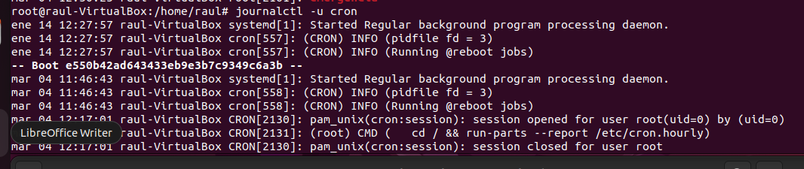
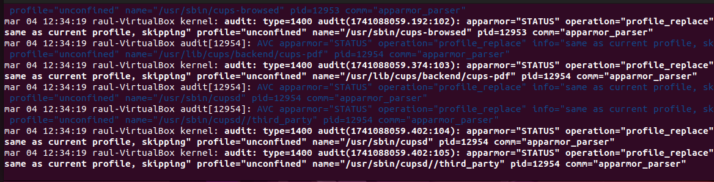
📌 Apartat Addicional: Monitorització Remota de Logs
Un apartat addicional que podem implementar és la possibilitat d'enviar els logs generats per una màquina a una carpeta compartida amb una altra màquina.
- Avantatge: Això permet una monitorització remota més eficient i centralitzada, facilitant la supervisió i anàlisi dels registres en temps real.
Servidor (Qui envia els logs)
Primer de tot, instal·larem nfs-kernel-server, ja que la compartició es farà a través de NFS.
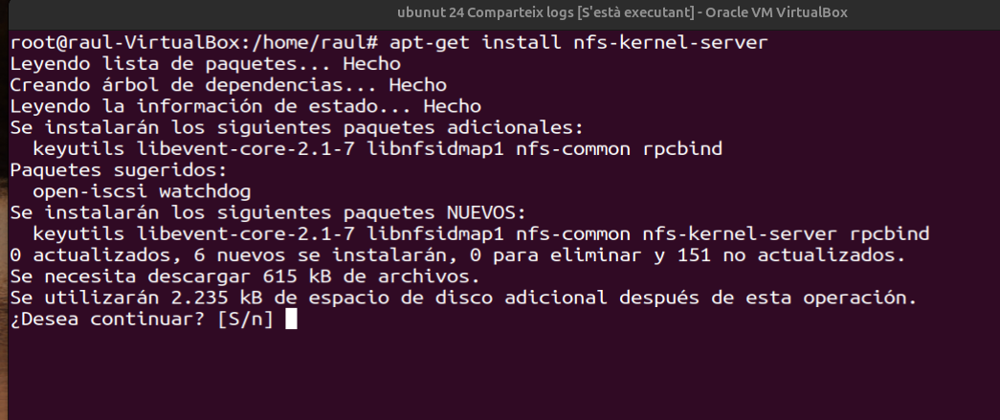
Seguidament, anirem a l'arrel del nostre directori per crear una carpeta (logs) on guardarem tots els logs que ens interessen.
A més, assignarem permisos a la carpeta perquè, de moment, tothom hi tingui accés. (Més endavant, es podrien restringir els permisos a un grup reduït de persones, com administradors...).
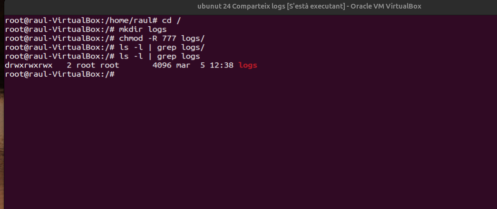
En aquest punt, volem que la carpeta /logs sigui la carpeta compartida entre les màquines.
Per aquest motiu, anem a /etc/exports per introduir la següent línia:
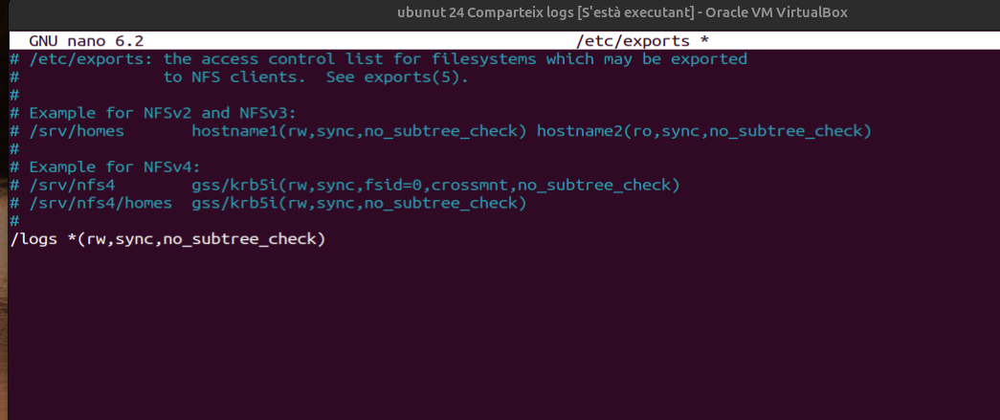
Un cop guardats els canvis, reiniciem els serveis per aplicar-los i assegurar-nos que la configuració s'ha efectuat correctament.
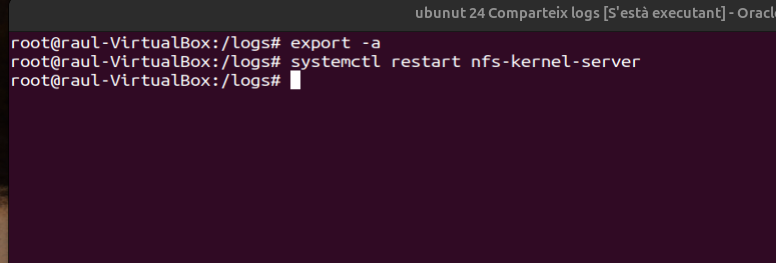
Client (Qui rep els logs)
A la màquina client, hem d'instal·lar nfs-common amb la següent comanda:
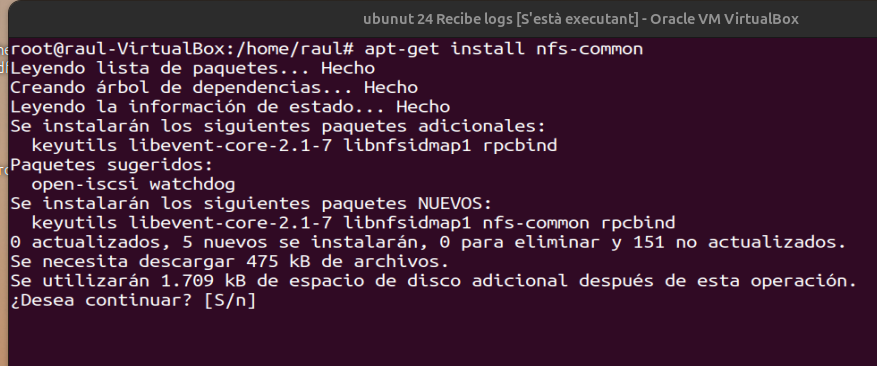
Creem una carpeta a l'arrel anomenada /muntatge i ens desplacem cap a ella.
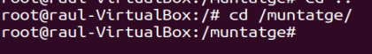
Muntem el directori /logs del servidor al directori /muntatge del client, indicant sempre la IP del servidor:
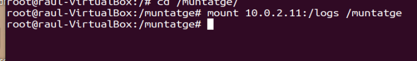
Compartició dels logs
Un cop fets els passos anteriors, anem al Server i editem el fitxer 50-default.conf per modificar la línia de mail.=alert, indicant que quan es generi aquest log, es guardi a /logs/nfs.log.
- Punt important: Com que el directori
/logsés compartit amb el client a través del directori/muntatge, qualsevol log creat i desat a/logsserà també guardat a/muntatgei, per tant, visible al client.
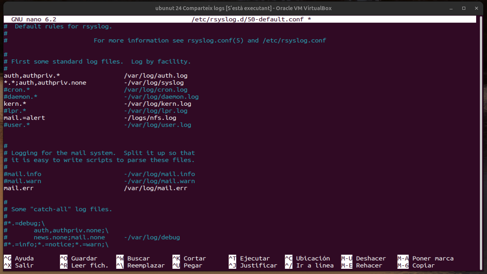
A la part superior de la imatge, veiem el client accedint al directori /muntatge, mentre que a la part inferior hi ha el servidor.
En aquest punt, al servidor, creem una alerta de mail amb prioritat alert i un missatge.
Com podem observar, l'alerta no es reflecteix ni als logs actuals de la màquina ni al directori del client, ja que encara no s'ha enviat l'ordre de creació del log.
En aquest punt, acabem d'enviar la comanda per crear el log. Ara, el podem veure als logs de la nostra màquina i, si fem un ls -l al client, també hi serà visible.
Així, podem comprovar que el fitxer amb el log creat ha estat rebut correctament pel client.
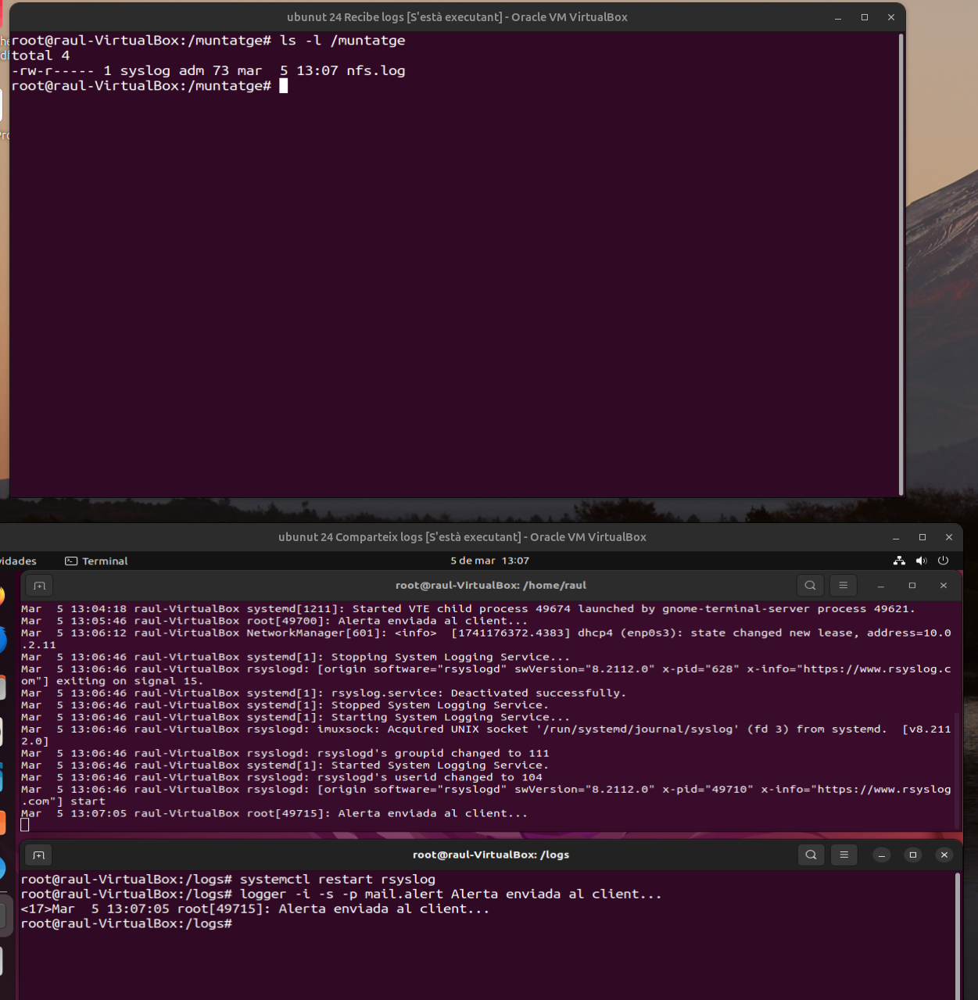
Comprovació del fitxer nfs.log del client:
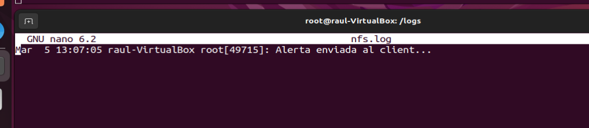
Una última comprovació consisteix a crear un log amb prioritat alert i verificar que arriba al client, però no es guarda al fitxer mail.log del servidor, ja que ha de ser enviat al directori compartit /logs.
Així, el log es desarà en el directori compartit i serà visible tant al servidor com al client, però no al fitxer mail.log.
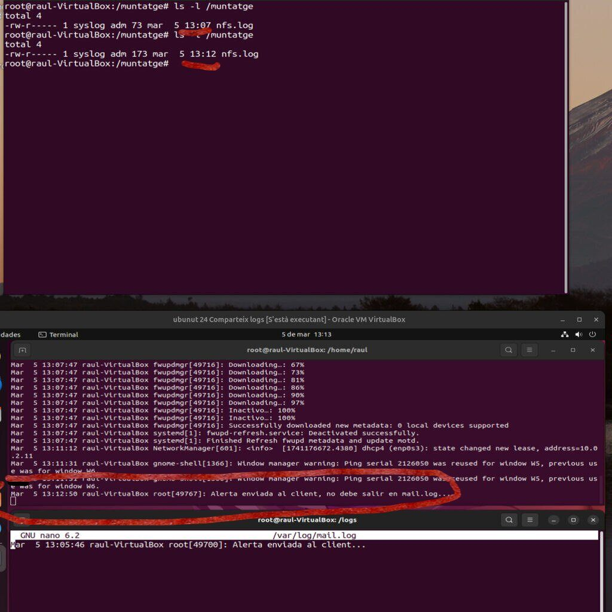